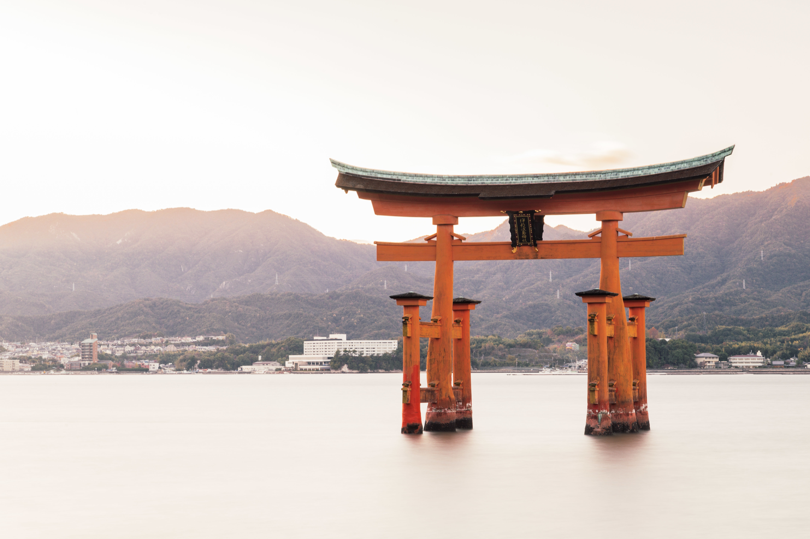
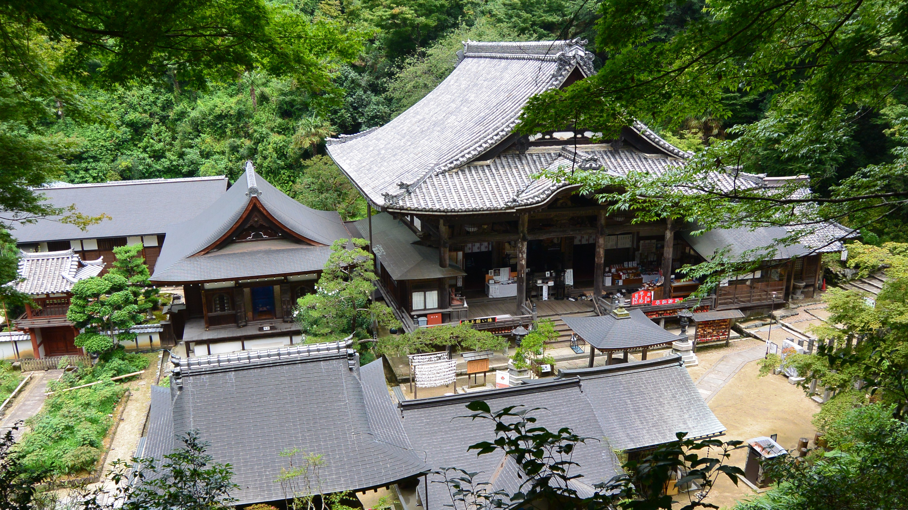
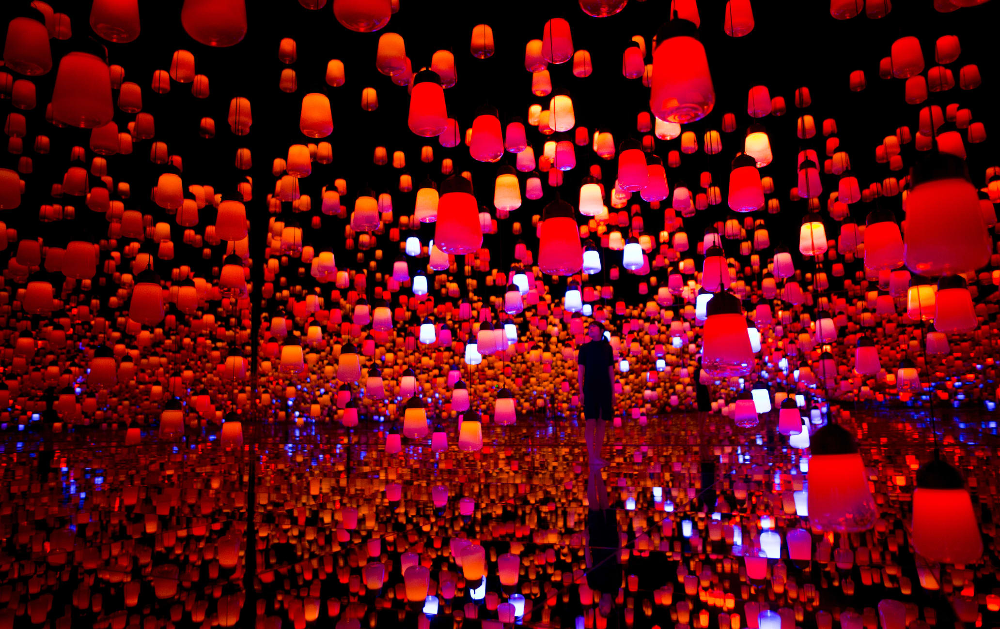
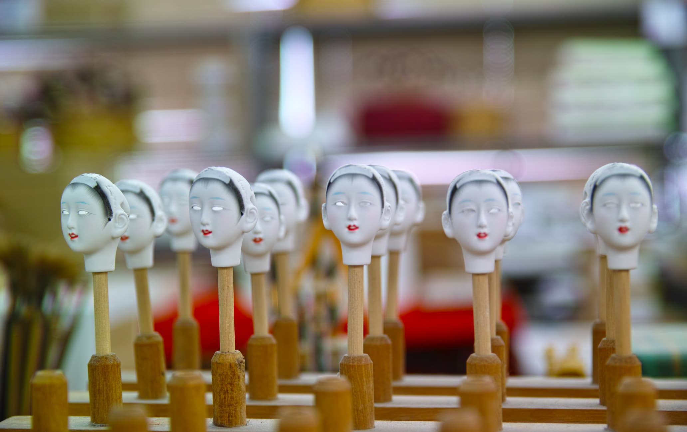
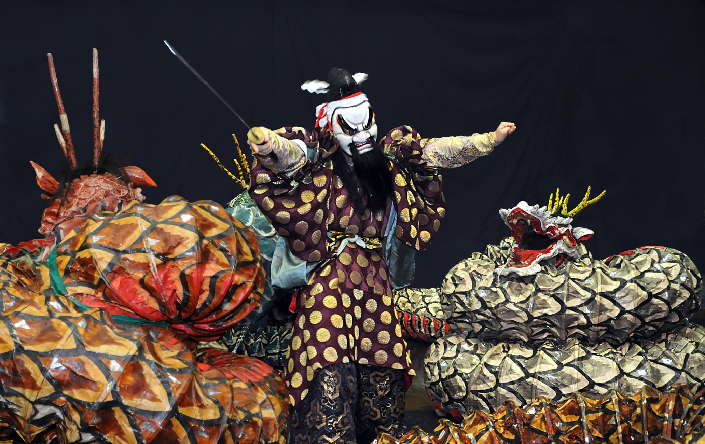
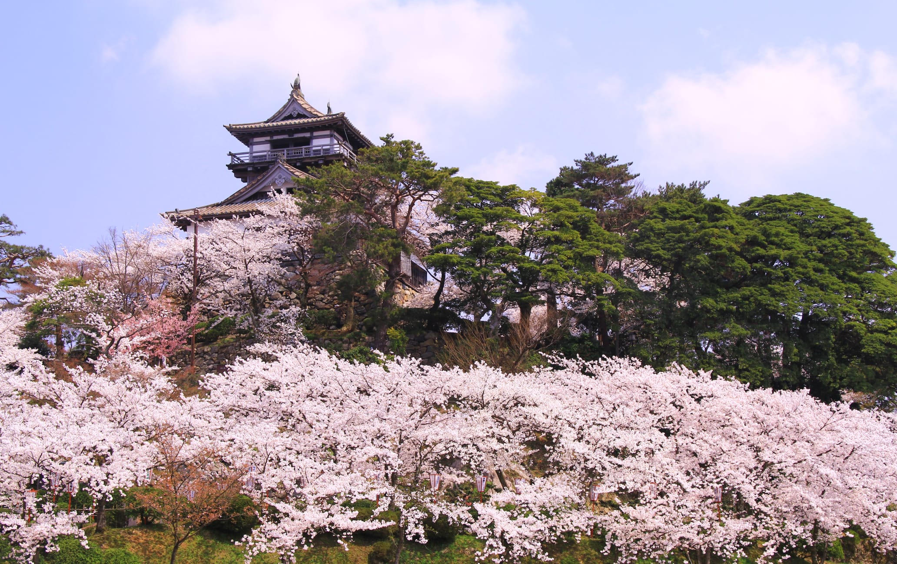
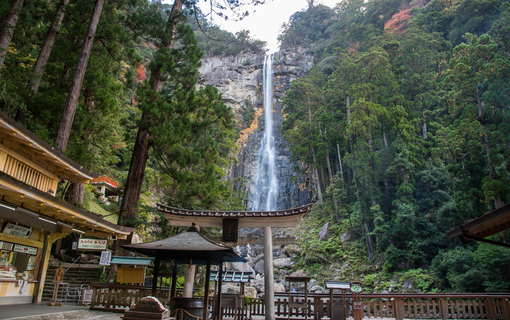
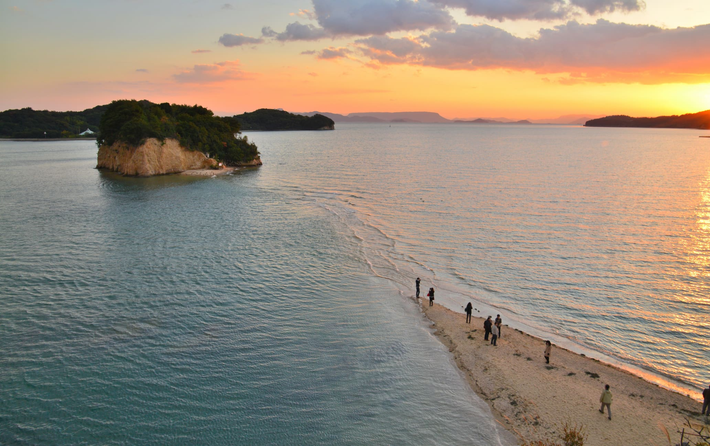

Yamagata Prefecture is home to three scenic and culturally important mountains, Mt. Haguro, Mt. Gassan and Mt. Yudono, known collectively as the Dewa Sanzan. According to the Shugendo ascetic faith that developed here, the pilgrimage through these mountains is a journey through the present, past, and into the future.
History in Japan
Takayama is Japan's most famous thatched-roof village, and a convenient base for alpine adventure. Widely considered Gifu's crown jewel, the mountain-ringed city of Takayama is a fantastic destination in itself, but also an excellent base from which to explore the Japan Alps and the surrounding Hida area.

The ancient burial mounds, archaeological sites, Japan's oldest temples and monuments dating back over 1,300 years mean a visit to Asuka is to tread in the footsteps of the rulers — many of them women — who helped shape the modern nation of Japan. And while Asuka is a living, breathing history book, it is also a picturesque slice of rural Japan ideal for a day of cycling and sightseeing.
Art in Japan
A Multi-Sensory Digital Art Experience in Tokyo Bay—teamLab Borderless Digital art pioneers teamLab are a collective of engineers, UI designers, math phenoms, and artists. The interdisciplinary group has hosted extraordinary exhibitions around the world for several years.
Dolls built this town, and you can make them here yourself Iwatsuki is a small district of Saitama City that's nicknamed the "City of Dolls." Iwatsuki began making dolls in the 17th century, and the figures made here, from cute little girl dolls to fierce warriors, were used in festivals all over Japan.
Iwami Kagura offers a unique take on a traditional performance art Fast, exciting, colorful and dynamic, Iwami Kagura is an unforgettable kind of masked dance-theater unlike anything you have seen before. The art has been thrilling local people for decades and is now regularly performed at the famous Gion Festival in Kyoto.
Nature in Japan
A castle in the mist with cherry blossoms and a ghost Maruoka Castle in Fukui Prefecture has the oldest existing wooden keep in the country. Kasumigajo, the alternative name for Maruoka Castle, means "castle in the mist," a reference to the area's misty weather. Kasumigajo Park was established around the base of the castle to commemorate its 400th anniversary.
In a primeval forest steeped in spirituality, Japan's tallest waterfall roars to welcome you. From its source in an evergreen primeval forest and with an awe-inspiring 133 meter drop, Nachi Falls is Japan's largest vertical drop waterfall. Much more than a simple scene of natural beauty, the falls are worshipped as the home of a Shinto deity.
Where romance is destined to come true. A popular spot for couples, if you walk along Angel Road on Shodoshima while holding hands with your beloved, eternal love is said to be yours. Angel Road is named after a 500-meter sandbar which only appears twice a day during low tide. Once the sandbar appears it forms a golden path to a series of small islets.
